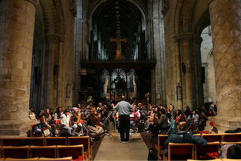

The Villa Sinfonia Foundation had its beginnings in 1975 when Lynn and Roy Oakley started the Oakley Violin Studio, a private violin studio. Since that time, the private studio has expanded to include other private violin, viola and cello studios in a 501 (c)3 non-profit organization called the Villa Sinfonia Foundation, founded in 1994.
Awards and Achievements
- Gold Award winners at the Pacific Basin Music Festival, Hawaii, 1994.
- Governor’s Award from the San Francisco Chapter of the Recording Academy’s Grammy Association, 2001.
- Certificate of Honor from the Board of Supervisors for the City and County of San Francisco for 25 years of outstanding service to the community, 2001.
- Certificate of Special Congressional Recognition from Nancy Pelosi, 2008
- Certificate of Appreciation from the San Francisco Police Department in gratitude for “your incredible rendition of the National Anthem at the 10th Annual law Enforcement Appreciation Night at AT & T Park, July 23, 2013”
Performances and Tours
- Annual concerts: Family Ensemble Concert, Holiday Concert, Winter Concert, April Chamber Orchestra concert, Union Square concert
- Other Bay Area performances include: Jack London Square, Crocker Plaza, Stonestown, Sheraton Palace Hotel, The World Trade Club, San Francisco Marriott Hotel, International Music Festival at Herbst Theatre, 1997
- Community outreach: The Shriners Hospital, the Veteran’s Administration Hospital, UC Medical Center, Kaiser Permanente Hospital, Cancer Society
- Featured in a Paramount Studios made-for-TV movie starring Elizabeth Montgomery
- 1994 Pacific Basin Music Festival, Honolulu, Hawaii
- 1996 Germany and Austria tour
- 1999 British Isles tour
- 2002 Carnegie Hall Performance, New York
- 2004 Davies Symphony Hall, San Francisco
- 2005 Prague and Italy tour
- 2008 Scotland and England tour
- 2011 Washington, D.C. Tour
- 2014 France Tour
- 2015 Carnegie Hall Performance, New York